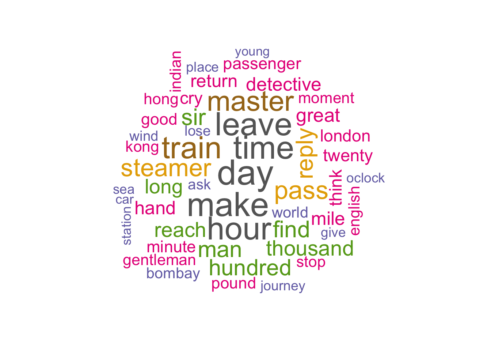
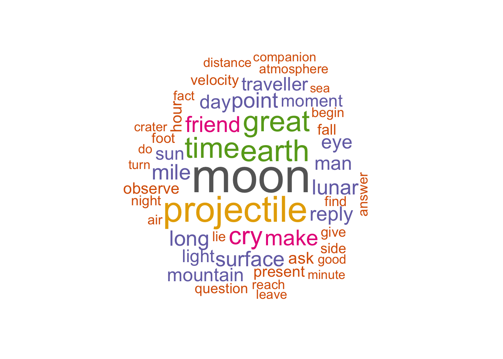
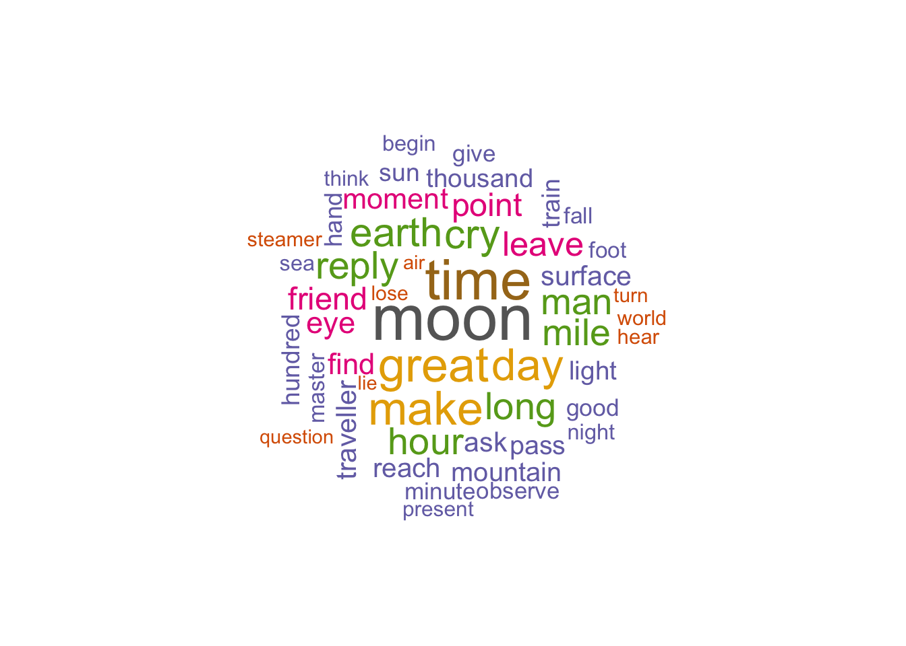
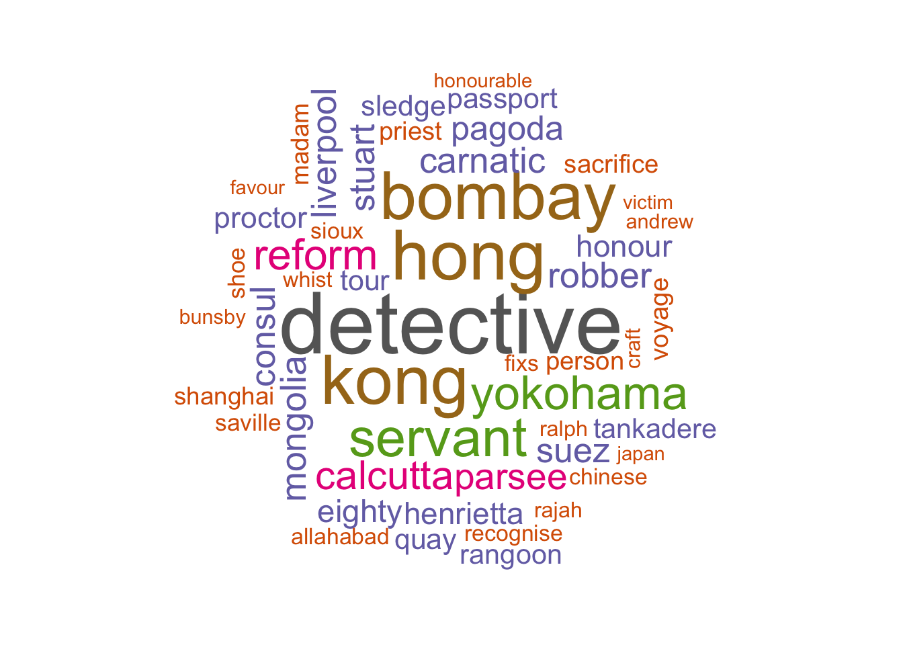
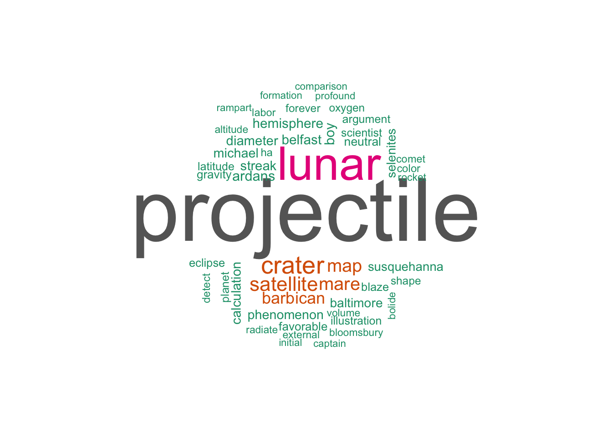

termy <- unlist(eighty_days_lem$word_lemma)
unikaty <- unique(termy)
bow <- sapply(unikaty, function(x) sum(termy == x[1]))
bow_sort <- sort(bow, decreasing = T)
color <- brewer.pal(8, "Dark2")
wordcloud(names(bow_sort), bow_sort, max.words = 50, colors = color, random.color = FALSE, random.order = FALSE, scale = c(3,.3))
Analizując najczęściej występujące słowa w książce “W 80 dni dookoła świata”, możemy wyciągnąć kilka wniosków:
Czas: Słowa takie jak “day”, “time”, “hour”, “minute” i “oclock” wskazują na duże znaczenie czasu w narracji. Czas jest istotnym elementem podróży i akcji książki.
Podróż: Słowa takie jak “leave”, “train”, “steamer”, “mile”, “journey”, “sea” i “station” odnoszą się do podróży, zarówno lądowych, jak i morskich. Podróżowanie jest centralnym tematem książki.
Postacie: Słowa takie jak “master”, “sir”, “man”, “passenger”, “gentleman” i “detective” sugerują obecność różnych postaci w książce. Zwracają uwagę na różne role i charaktery występujących bohaterów.
Miejsca: Słowa takie jak “London”, “Bombay”, “Hong Kong” i “Indian” wskazują na różne lokalizacje, które odwiedzane są w trakcie podróży. Książka przenosi czytelnika przez różne miejsca na całym świecie.
Akcja i napięcie: Słowa takie jak “reply”, “find”, “think”, “ask” i “lose” wskazują na dynamiczną akcję, wątki detektywistyczne i napięcie w narracji.
Interpretując te wnioski, można stwierdzić, że książka “W 80 dni dookoła świata” skupia się na podróży głównego bohatera, przez różne miejsca, z naciskiem na element czasu i dynamiczną akcję. Postacie, którymi podróżnik spotyka w trakcie swojej podróży, odgrywają istotną rolę w rozwinięciu fabuły. Książka przedstawia zróżnicowane lokalizacje i kultury, co dodaje jej różnorodności i interesującej atmosfery.
termy2 <- unlist(all_moon_lem$word_lemma)
unikaty2 <- unique(termy2)
bow2 <- sapply(unikaty2, function(x) sum(termy2 == x[1]))
bow_sort2 <- sort(bow2, decreasing = T)
color2 <- brewer.pal(8, "Dark2")
wordcloud(names(bow_sort2), bow_sort2, max.words = 50, colors = color2, random.color = FALSE, random.order = FALSE)
Analizując najczęściej występujące słowa w książce “Wokół księżyca”, możemy wyciągnąć następujące wnioski:
Księżyc: Słowa takie jak “moon”, “lunar”, “surface”, “crater”, “atmosphere” i “projectile” odnoszą się bezpośrednio do księżyca. Wskazują one na to, że księżyc jest kluczowym elementem tej książki.
Podróż kosmiczna: Słowa takie jak “traveller”, “space”, “velocity”, “distance” i “companion” sugerują obecność tematyki podróży kosmicznej. Książka skupia się na eksploracji kosmosu i podróży w przestrzeni międzyplanetarnej.
Czas i pomiar: Słowa takie jak “time”, “hour”, “moment” i “minute” wskazują na znaczenie czasu i pomiaru czasu w narracji. Jest to istotne w kontekście podróży kosmicznej i poruszania się w przestrzeni.
Przyjaźń: Słowo “friend” sugeruje obecność wątków związanych z przyjaźnią. Relacje międzyludzkie mogą odgrywać istotną rolę w rozwoju fabuły.
Odkrywanie i obserwacja: Słowa takie jak “observe”, “find” i “discover” wskazują na aktywność badawczą i odkrywczą. Książka skupia się na eksploracji nowych miejsc i odkrywaniu nieznanych tajemnic.
Interpretując te wnioski, można stwierdzić, że książka “Wokół księżyca” skupia się na podróży kosmicznej, odkrywaniu i eksploracji kosmosu. Księżyc jest centralnym tematem książki, a postacie podróżujące na pokładzie rakiety mają okazję obserwować i odkrywać różne aspekty księżycowego krajobrazu. Przyjaźń i relacje międzyludzkie mogą odgrywać istotną rolę w rozwoju fabuły. Czas jest istotnym elementem podróży kosmicznej, a pomiar czasu i obserwacja mają duże znaczenie w narracji.
# Znalezienie elementów, które występują w obu wektorach
slowa <- intersect(termy, termy2)
# Wyznaczenie czestosci słów
czestosci_temat1 <- table(termy)[slowa] #wektor zawierajacy liczby wystąpień elementów z wektora slowa w wektorze slowa_temat
czestosci_temat2 <- table(termy2)[slowa]
# Obliczenie sumy czestosci słów
czestosci_suma <- czestosci_temat1 + czestosci_temat2
color3 <- brewer.pal(8, "Dark2")
wordcloud(slowa, czestosci_suma, max.words = 50, colors = color3, random.color = FALSE, random.order = FALSE, scale = c(3,.3))
Z chmury dotyczącej wspólnych słów występujących w książkach “W 80 dni
dookoła świata” i “Wokół księżyca”, można wyciągnąć kilka wniosków:
Księżyc: Słowo “moon” jest jednym z najczęściej występujących słów. Wskazuje to na to, że księżyc jest istotnym elementem obu książek. Może odnosić się zarówno do podróży kosmicznej w “Wokół księżyca”, jak i do klimatycznych opisów w “W 80 dni dookoła świata”.
Czas: Słowa takie jak “time”, “hour”, “day” i “minute” sugerują, że czas jest ważnym aspektem obu książek. W “W 80 dni dookoła świata” dotyczy on planowania podróży, natomiast w “Wokół księżyca” odnosi się do pomiaru czasu podróży kosmicznej.
Wielkość i odległość: Słowa takie jak “great”, “long”, “mile”, “thousand” i “hundred” wskazują na znaczenie wielkości i odległości w obu książkach. Mogą odnosić się zarówno do długości podróży w “W 80 dni dookoła świata”, jak i do odległości kosmicznych w “Wokół księżyca”.
Podróżowanie i komunikacja: Słowa takie jak “make”, “reach”, “pass”, “train”, “steamer” i “lose” sugerują tematykę podróży i komunikacji, które są obecne w obu książkach. W “W 80 dni dookoła świata” odnoszą się do środków transportu i osiągania kolejnych miejsc, a w “Wokół księżyca” do podróży kosmicznej i dotarcia na księżyc.
Interpretując te wnioski, można stwierdzić, że obie książki mają elementy podróży, czasu, odległości i wielkości. Można powiedzieć, że księżyc jest ważnym motywem zarówno w “W 80 dni dookoła świata”, jak i w “Wokół księżyca”. Podróżowanie i komunikacja są istotne w obu książkach, choć w różny sposób. Czas odgrywa ważną rolę w narracji obu dzieł.
eighty_moon <- bow["moon"]
moon_moon <- bow2["moon"]
cat("Występowanie słowa 'moon' w książce 'W 80 dni dookoła świata':", eighty_moon, "\n",
"Występowanie słowa 'moon' w książce 'Wokół księżyca':", moon_moon, "\n")## Występowanie słowa 'moon' w książce 'W 80 dni dookoła świata': 5
## Występowanie słowa 'moon' w książce 'Wokół księżyca': 468Należy jednak zauważyć, że słowa te są liczone wartością bezwzlędną, co może znacznie wpływać na intepretacje. Przykładowo wniosek o ważności księżyca w obu książkach jest oczywiście błędny, jednakże nie znając fabuły możemy uznać go za prawdziwy. Przy bliższej analizie mozemy zauważyć, że książka “W 80 dni dookoła świata” wspomina o księżycu, jednakże zaledwie kilka razy, nie może to mieć wpływu na fabułe.
# Wyznaczenie słów występujących w termy, ale nie występujących w termy2
slowa <- setdiff(termy, termy2) #elementy z wektora termy, które nie występują w wektorze termy2
# Wyznaczenie czestosci słów
czestosci <- table(termy)[slowa]
color <- brewer.pal(8, "Dark2")
wordcloud(slowa, czestosci, max.words = 50, colors = color, random.color = FALSE, random.order = FALSE, scale = c(4,.3))
Z powyższej chmury, przedstawiającej słowa charakterystyczne tylko dla książki “W 80 dni dookoła świata”, można wyciągnąć poniższe wnioski:
Lokalizacje: Słowa takie jak “hong”, “kong”, “bombay”, “yokohama”, “calcutta”, “liverpool” i “suez” wskazują na różne miejsca, które są odwiedzane w trakcie podróży głównych bohaterów. Są to miejsca, które mają znaczenie dla fabuły i odzwierciedlają różnorodność geograficzną podróży.
Postacie: Słowa takie jak “detective”, “servant”, “reform”, “parsee”, “robber”, “stuart”, “consul” i “priest” odnoszą się do różnych postaci, które pojawiają się w książce. Może to sugerować obecność wątków kryminalnych, relacji międzyludzkich i różnorodności społecznej.
Terminy podróżnicze: Słowa takie jak “pagoda”, “voyage”, “sacrifice”, “saturday” i “recognise” odnoszą się do terminów związanych z podróżami, kulturą i zdarzeniami w książce. Nadają one charakterystyczny wydźwięk narracji i odzwierciedlają specyficzny kontekst historii.
# Wyznaczenie słów występujących w termy2, ale nie występujących w termy
slowa2 <- setdiff(termy2, termy)
# Wyznaczenie czestosci słów
czestosci2 <- table(termy2)[slowa2]
color <- brewer.pal(8, "Dark2")
wordcloud(slowa2, czestosci2, max.words = 50, colors = color, random.color = FALSE, random.order = FALSE, scale = c(6,.4))
Analizując najczęściej występujące słowa charakterystyczne tylko dla książki “Wokół księżyca”, można wyciągnąć kilka dodatkowych wniosków dotyczących jej treści:
Przestrzeń kosmiczna: Słowa takie jak “projectile”, “lunar”, “crater”, “satellite”, “map”, “mare”, “hemisphere”, “diameter”, “gravity”, “eclipse”, “planet” sugerują obecność tematyki związanej z kosmosem i badaniem Księżyca.
Postacie i nazwiska: Słowa takie jak “barbican”, “ardans”, “boy”, “michael”, “selenites”, “susquehanna”, “captain” wskazują na różne postacie, być może kluczowe dla fabuły książki.
Zjawiska i terminy naukowe: Słowa takie jak “phenomenon”, “neutral”, “favorable”, “oxygen”, “gravity”, “comet”, “radiate”, “altitude”, “formation” odnoszą się do zjawisk i terminów naukowych związanych z kosmosem i eksploracją.
Elementy ilustracyjne i opisowe: Słowa takie jak “illustration”, “color”, “detect”, “ha”, “comparison”, “external”, “illustration” sugerują obecność opisów, ilustracji i porównań w książce, może to się wiązać z aspektem naukowym.
Porównując, analiza najczęściej występujących słów sugeruje, że w książkach “W 80 dni dookoła świata” i “Wokół księżyca” Juliusza Verne’a, znajdziemy pewne podobieństwa, ale również znaczące różnice, które wpływają na ich kontekst, tematykę itd.
Podobieństwa:
Podróż: Zarówno w “W 80 dni dookoła świata”, jak i w “Wokół księżyca”, podróż jest istotnym motywem. W obu książkach główni bohaterowie wyruszają w fascynujące podróże, odkrywając różne miejsca.
Różnorodność geograficzna: Obie książki oferują różnorodne lokalizacje. W “W 80 dni dookoła świata” podróżnik odwiedza miasta i kraje na różnych kontynentach, podczas gdy w “Wokół księżyca” różnorodność geograficzna dotyczy eksploracji księżyca i jego otoczenia.
Znaczenie czasu: Czas odgrywa ważną rolę zarówno w podróży Phileasa Fogga w “W 80 dni dookoła świata”, jak i w podróży kosmicznej bohaterów “Wokół księżyca”. Pomiar czasu, planowanie i wykorzystanie go są kluczowymi elementami w obu książkach.
Różnice:
Kontekst: “W 80 dni dookoła świata” to powieść przygodowa, skupiająca się na podróży lądowej i morskiej. Natomiast “Wokół księżyca” to science fiction, opowiadające o podróży kosmicznej i eksploracji księżyca.
Tematyka: “W 80 dni dookoła świata” porusza tematy związane z kulturą, społeczeństwem i różnicami między regionami, podczas gdy “Wokół księżyca” skupia się na tematach kosmicznych, naukowych i odkrywaniu przestrzeni kosmicznej.
Postacie: Postacie w obu książkach różnią się rolami. W “W 80 dni dookoła świata” mamy podróżnika i jego towarzysza (friend), a także tajemniczego detektywa. W “Wokół księżyca” pojawia się grupa podróżników (companion), każdy pełniący inną rolę (naukowiec, kapitan itd).
Atmosfera: “W 80 dni dookoła świata” ma często klimat przygodowy, pełen napięcia i ekscytacji, podczas gdy “Wokół księżyca” eksploruje naukową stronę podróży kosmicznej, skupiając się na obserwacjach i badaniach.
Podsumowując, obie książki mają podróż jako istotny element fabuły, ale różnią się kontekstem, tematyką, postaciami i atmosferą.